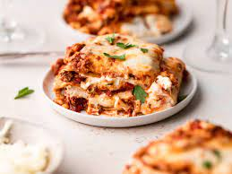

Description
Lasagna is the name of one of the oldest and best-known pasta shapes. It is usually rectangular or ribbon shaped, thicker than tagliatelle,
made from a dough based on flour and eggs, with numerous local variants. After being boiled, the rectangular lasagna noodles are drained
and placed in layers with a filling that varies based on different local traditions.
There is a fresh version of lasagna that requires pre-boiling the pasta before filling it or adding sauce and then baking. There are also
commercial versions, however, that allow for spreading the pasta in a baking pan and filling it or adding more liquid sauces so that the
pasta softens during cooking. The sauces may be based on tomatoes and meat, cheese, pesto or even vegetables and béchamel. On top of it
all, there is a layer of Parmigiano Reggiano cheese, and it is baked for a length of time that depends on the type of lasagna noodles used.
Ingredients
- 1 pound sweet Italian sausage
- ¾ pound lean ground beef
- ½ cup minced onion
1 (28 ounce) can crushed tomatoes
- ½ cup water
- 2 tablespoons white sugar
- 1 ½ teaspoons salt, divided, or to taste
- ¼ teaspoon ground black pepper
- 4 tablespoons chopped fresh parsley
- 1 egg
- pound mozzarella cheese, sliced
- ¾ cup grated Parmesan cheese
Steps
- cook sausage, ground beef, onion, and garlic over medium heat until well browned. Stir in crushed tomatoes, tomato paste,
tomato sauce, and water. Season with sugar, basil, fennel seeds, Italian seasoning, 1 teaspoon salt, pepper, and 2 tablespoons parsley.
Simmer, covered, for about 1 1/2 hours, stirring occasionally
- Cook lasagna noodles in boiling water for 8 to 10 minutes. Drain noodles, and rinse with cold water.
- Preheat oven to 375 degrees F (190 degrees C).
- To assemble, spread 1 1/2 cups of meat sauce in the bottom of a 9x13-inch baking dish. Arrange 6 noodles lengthwise over meat sauce.
Spread with one half of the ricotta cheese mixture
- Bake in preheated oven for 25 minutes. Remove foil, and bake an additional 25 minutes. Cool for 15 minutes before serving.
Return to top
Return to Home page